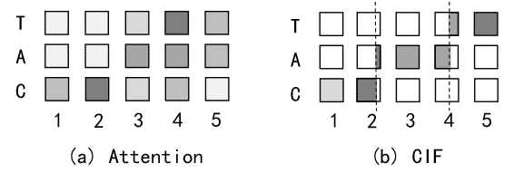
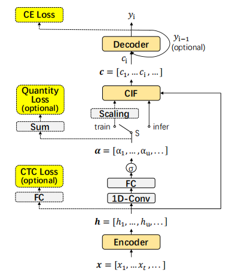
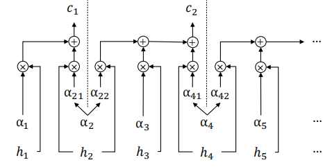
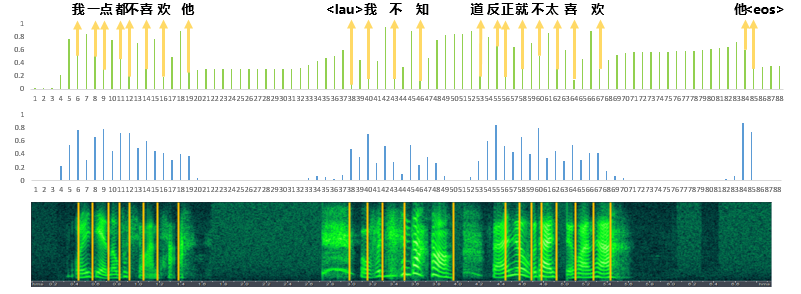
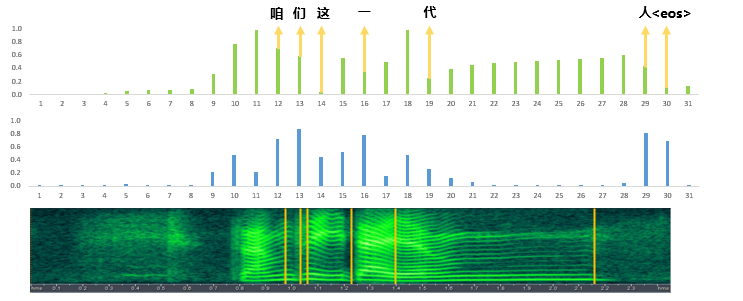
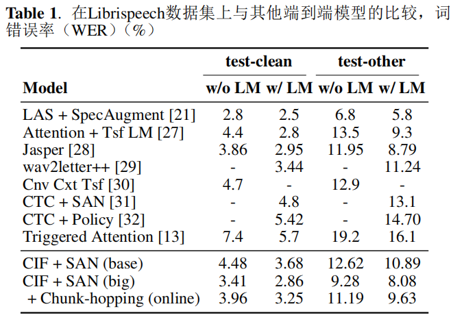
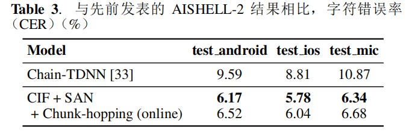
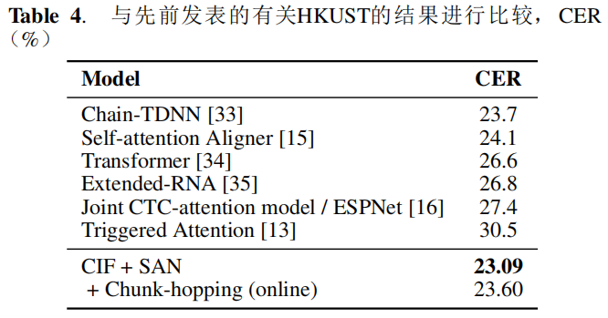
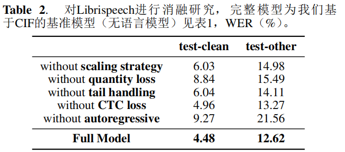

notes/CIF Continuous Integrate-and-Fire.md
CIF: Continuous Integrate-and-Fire for End-to-End Speech Recognition
- 阅读日期：2026-04-08
- 阅读状态：已读
- 标签：#paper #asr #alignment #cif #imported
- 相关方向：端到端语音识别、软单调对齐、流式识别
- 阅读目的：理解 CIF 如何统一对齐、边界定位与可微训练
1. 论文信息
- 题目：CIF: Continuous Integrate-and-Fire for End-to-End Speech Recognition
- 链接：CIF.pdf
- 作者：Linhao Dong, Bo Xu
- 单位：待确认（源笔记仅记录作者，未完整给出全部单位）
- 发表：ICASSP 2020
- 关键词：soft monotonic alignment, integrate-and-fire, end-to-end ASR, streaming recognition, acoustic boundary
- 源笔记：CIF.md
2. 先看结论（适合快速回顾）
- 这篇论文主要解决什么问题：attention 型 E2E ASR 难以流式推理与稳定对齐定位。
- 提出的核心方法是什么：用连续积分放电（CIF）机制进行单调软对齐和边界发射。
- 最终最重要的结果是什么：在多数据集获得有竞争力结果，并具备在线识别与边界定位能力。
- 我现在是否值得深入读：值得
- 原因：方法结构清晰，工程可落地性强。
3. 问题定义
3.1 研究问题
- 论文关注的核心问题：在端到端语音识别中，如何建立一种既能单调推进、又能定位声学边界、还可端到端训练的软对齐机制。
- 为什么这个问题重要：基于注意力的 E2E ASR 虽精度高，但流式能力弱、时间戳能力弱，且对每个解码步会关注大量无关编码步，计算冗余大。
-
论文要优化或解决的目标：通过 CIF 对齐机制，用连续函数模拟积分-放电过程，提升在线识别与边界定位能力，并保持竞争性能。
-
原始摘要信息完整整理：
- 用于序列转化的软单调对齐机制，灵感来自脉冲神经网络（spiking neural networks）的积分-放电模型。
- 采用由连续函数组成的编码器-解码器架构。
- 应用于 ASR，计算简洁，支持在线识别和声学边界定位。
- 提供缩放策略、数量损失、尾部处理三类机制缓解 CIF 独特问题。
- 源笔记给出的关键数值：WER 2.86%（LibriSpeech）。
3.2 为什么重要
- 这个问题为什么值得做：语音任务天然时序单调，若对齐机制不稳定会直接影响识别质量和延迟。
- 现实应用价值：提升流式识别可用性并支持边界定位/时间戳相关能力。
- 学术上的意义：给出可微分且可解释的软单调对齐方案。
3.3 难点
- 难点 1：如何在可反向传播的连续函数框架中模拟积分-放电过程。
- 难点 2：交叉熵训练要求输出与目标长度匹配，而 CIF 发射次数在训练中可能与标签长度不一致。
-
难点 3：推理尾部常残留不足阈值的信息，直接丢弃会损失语音内容。
-
相关困难的原始论述完整整理：
- attention 模型无法天然支持流式识别，因为依赖完整编码序列。
- 不是帧同步机制，因此难以自然附加时间戳。
- 解码时对许多声学上不相关帧的关注会引入额外计算。
4. 论文方法
4.1 方法总览
- 方法名称：CIF（Continuous Integrate-and-Fire）。
- 整体思路：
- 每个编码步输入当前编码表示
h_u与权重α_u。 - 前向累积权重并整合向量信息，达到阈值
β即定位到一个边界并发射聚合嵌入。 - 边界点信息由相邻标签共享，边界点权重拆分给当前与下一个标签。
- 代理目标 / 损失 / 优化目标：
- 主损失为交叉熵
L_CE。 - 可选辅助损失：数量损失
L_QUA与 CTC 损失L_CTC。 - 总损失：
L = L_CE + λ1 L_CTC + λ2 L_QUA。
4.2 核心设计
每个设计都尽量回答：做了什么、为什么这么设计、解决了哪个难点
1. 模块一：连续积分放电（CIF 对齐本体）
- 做了什么：
- 在每个编码器步接收
h_u与α_u。 - 前向累积
α_u，当累计达到阈值β时触发一次发射，得到c_i。 - 对于跨边界的编码步，权重拆分到两个相邻输出，保证信息不丢失。
- 为什么这么设计：
- 过程严格单调，符合语音到文本的顺序对齐需求。
- 发射点可解释为声学边界，天然支持定位。
- 采用连续计算，支持梯度反传。
- 关键实现：
- 推荐
β=1.0（源笔记记录实验中也有β=0.9设置）。 - 发射嵌入示例：
c1 = 0.2*h1 + 0.8*h2-
c2 = 0.1*h2 + 0.6*h3 + 0.3*h4 -
对应图（完整迁移）：



2. 模块二：支持策略（缩放、数量损失、尾部处理）
- 做了什么：
- 缩放策略：将
α乘以比例因子Ŝ / Σα_u，使权重总和对齐目标长度Ŝ。 - 数量损失：
L_QUA = |Σα_u - Ŝ|，约束发射数量接近标签数量。 - 尾部处理：推理末端若剩余权重大于阈值（源笔记示例 0.5），触发额外发射；并可引入
<EOS>处理结束。 - 为什么这么设计：
- 缩放策略解决 CE 训练长度不匹配。
- 数量损失促进边界学习并减轻移除缩放后的退化。
- 尾部处理避免末端信息损失。
- 关键实现：
- 联合损失：
L = L_CE + λ1 L_CTC + λ2 L_QUA。
3. 模块三：模型结构与解码设计
- 做了什么：
- 编码器：两层卷积前端 + 金字塔 SAN，时间分辨率降到 1/8。
- 权重预测：以
h_u为中心窗口输入 1D 卷积，再经全连接 + sigmoid 得到α_u。 - 解码器：
- 自回归：结合
e_{i-1}、c_{i-1}、c_i。 - 非自回归：直接使用
c_i进入 SAN，提升并行性。 - 推理：beam search + SAN-LM 重打分。
- 为什么这么设计：
- 编码器保证高质量时序表示。
- 两种解码器兼顾精度和并行速度。
- LM 重打分进一步提升输出质量。
- 关键实现：
- 最终解码目标按 NBest 重打分：
argmax (log P(y|x) + γ log P_LM(y))。
4.3 训练 / 推理细节
- 训练阶段做了什么：按联合损失训练 CIF 框架，并通过缩放与数量损失约束发射数量。
- 推理阶段做了什么：按累积阈值触发发射，并在尾部处理剩余权重，结合 beam search + LM 重打分。
- 损失函数组成：
L = L_CE + λ1 L_CTC + λ2 L_QUA。 - 关键超参数：
β、λ1、λ2、卷积窗口、解码层数、beam size 等。 - 复杂度 / 额外开销：较注意力解码可减少对无关帧的关注，具备流式友好性。
5. 论文贡献（只写作者真正新增的东西）
- 贡献 1：提出了面向 E2E ASR 的 CIF 连续积分放电式软单调对齐机制。
- 贡献 2：在一个可微流程中统一“定位边界 + 聚合信息 + 解码预测”。
- 贡献 3：给出完整工程策略（缩放、数量损失、尾部处理）与跨数据集验证。
判断标准：如果删掉这一点，论文是否还成立？如果“是”，那它可能不是核心贡献。
6. 实验设置
- 数据集：LibriSpeech、AISHELL-2、HKUST。
- 模型：基于 SAN 的编码器-解码器，比较自回归与非自回归版本。
- 对比方法：源笔记相关工作中涉及多类软/硬单调对齐与 E2E ASR 框架。
- 评价指标：WER / CER（依数据集）。
- 关键超参数（源笔记完整迁移）：
- 中文数据：
h=4, d_model=640, d_ff=2560。 - LibriSpeech：base
(512, 2048)，large(1024, 4096)。 - 金字塔结构
n=5。 - 块跳跃：chunk 256 帧，hop 128 帧。
- 权重预测 1D 卷积窗口：多数 3，LibriSpeech base 为 5。
- CIF 阈值
β=0.9（笔记记录，论文建议 1.0）。 - 解码 SAN 层：多数 2，LibriSpeech base 为 3。
- 损失权重：
λ1中文 0.5、LibriSpeech 0.25；λ2=1.0。 - LM：
h=4, d_model=512, d_ff=2048；层数 HKUST/AISHELL-2/LibriSpeech 分别为 3/6/20。 - dropout：多数 0.2，LibriSpeech base 0.1。
- label smoothing：0.2。
- 中文数据集 scheduled sampling：0.5。
- beam size：10。
- LM 重打分
γ：HKUST 0.1，AISHELL-2 0.2，LibriSpeech 0.9。 -
运行统计：结果取 3 次平均。
-
实验可视化补充：


7. 主要结果
7.1 主结果
- 结果 1：LibriSpeech 上源笔记记录 WER 2.86%。
- 结果 2：AISHELL-2 与 HKUST 上均得到有竞争力表现。
-
结果 3：低帧率设置下仍保持性能，说明 CIF 具备较高效率潜力。
-
结果图（完整迁移）：



7.2 从结果中能读出的结论
- 结论 1：CIF 在对齐质量和在线可用性之间取得较好平衡。
- 结论 2：数量损失和尾部处理是稳定性能的重要工程组件。
- 结论 3：方法在不同语种/数据集上具备迁移潜力。
7.3 最关键的证据
- 最关键表格：各数据集主结果与对比表（源笔记图 6/8/9 对应）。
- 最关键图：CIF 机制示意图与消融对比图。
- 最关键数字：LibriSpeech WER 2.86%（源笔记记录）。
- 为什么它最关键：直接体现“机制有效 + 工程可用”。
8. 消融实验
- 消融点 1：去除解码器自回归机制导致明显退化（尤其在部分数据集）。
- 消融点 2：数量损失有助于边界定位与稳定训练。
-
消融点 3：尾部处理可减少推理末端信息丢失造成的性能下降。
-
消融图（完整迁移）：

9. 和已有工作的关系
- 这篇论文最接近哪些方法：CTC、RNN-T、Monotonic Attention、基于注意力的 E2E ASR。
- 和已有方法相比，最大的不同：用连续积分放电实现可微单调对齐并显式产生边界。
- 真正的新意在哪里：在同一框架中统一对齐、边界定位与端到端训练。
- 哪些地方更像“工程改进”而不是“方法创新”：缩放、尾部处理与重打分策略。
- 这篇论文在整个研究脉络里的位置：流式 E2E ASR 对齐机制中的代表方法。
10. 我的理解（这一节不能照抄论文）
- 直观理解：CIF 相当于把语音对齐做成“连续积分 + 到阈值放电”的动态系统。
- 最值得关注的设计：边界点权重拆分，避免了边界信息割裂。
- 和已有方法相比的新意：不依赖硬停点策略，在可微框架内兼顾对齐和定位。
- 我认为最强的一点：更贴近流式 ASR 工程需求，且具备明确可解释边界信号。
11. 局限性
- 局限 1：阈值、损失系数、窗口大小等参数对数据集可能敏感。
- 局限 2：复杂声学条件下性能仍受编码器质量影响。
- 局限 3：与新一代自监督语音前端结合效果还需要系统实验。
可从假设过强、实验覆盖不足、开销过大、泛化不明、复现风险高等角度写。
12. 对我的启发
- 能直接借鉴的部分：以可解释边界信号驱动序列聚合。
- 不能直接照搬的部分：超参数对语料与语言依赖较强。
- 对我当前课题的启发：可以把“可微分边界触发”迁移到其他序列建模任务。
- 可以尝试的改进方向：结合自监督前端与更强语言模型联合训练。
- 可以作为 baseline / 对比项 / ablation 的部分：去除数量损失、去除尾部处理、阈值变化。
13. 待验证问题
- 问题 1：是否可把 CIF 边界直接用于时间戳监督和对齐评估？
- 问题 2：在低资源语种与高噪声场景下 CIF 是否更稳健？
- 问题 3：CIF 与大型语音预训练模型联合微调的最佳范式是什么？
14. 一句话总结
- CIF 用连续积分放电机制，把“单调软对齐、边界定位、端到端训练”三者有效统一到 ASR 中。
15. 快速索引（便于二次回看）
- 核心公式：
L = L_CE + λ1 L_CTC + λ2 L_QUA与 CIF 发射累计机制。 - 核心图表：机制图（1/2/3）、结果图（6/8/9）、消融图（7）。
- 最值得复看的章节：方法细节三模块 + 实验设置超参数区。
- 复现时最需要注意的点：阈值、数量损失与尾部处理的联动。
15.1 整合说明 / 索引
- 本篇原始导入与补充细节内容已完整并入 1~14 节；全部图片已保留在对应方法/实验位置。
15.2 导入来源与完整性记录
- 源页面：CIF.md
- 图片资源目录：
papers_sources/Research-Paper-Notes/CIF.aseets/ - 联网补充来源：
- arXiv（v4 comments 标注 To appear at ICASSP 2020）: https://arxiv.org/abs/1905.11235
15.3 已完成自检记录
- [x] 原始笔记内容已完整整理进模板。
- [x] 图片已插入并保留在相应位置。
- [x] 已联网补充论文元信息。
Wiki 关联
- 参考摘要：CIF Continuous Integrate-and-Fire
- 概念锚点：Continuous Integrate-and-Fire Alignment、Soft Monotonic Alignment for Sequence Transduction、Quantity-Aware Emission Control in CIF
- 实体锚点：Linhao Dong、Bo Xu、LibriSpeech Dataset
- 综合页面：Temporal Structure Learning in Sequence Models、Structured Spatio-Temporal Representation Learning、Spatio-Temporal Representation in Language Models